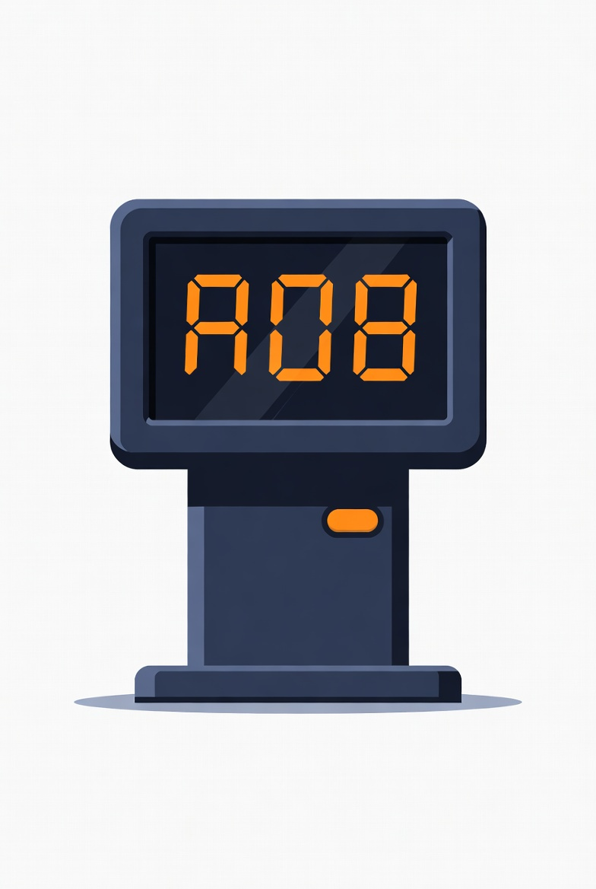

⚙️ Configuração desta Estação
Número do Caixa
Tipo do Caixa
Carregando tipos do servidor...
Tecla de Atalho
Tecla para acionar o telão (ex: Y, F9, F12). F9 sempre funciona como fallback.
Intervalo entre Chamadas (Cooldown)
Tempo de espera em segundos entre acionamentos para evitar chamadas duplicadas por engano (ex: 2). Use 0 para desativar.
Pasta de Chamadas
Pasta compartilhada onde o arquivo será gravado ao acionar (ex: \\srvsistema\GERTEC\chamada)
URL do Servidor WebSocket
(opcional)
Se vazio, o app encontra o servidor automaticamente na rede. Preencha apenas se a descoberta automática não funcionar (ex: ws://192.168.3.33:8080)
Som desta Estação
🗣️ Voz (síntese)
🔔 Campainha
🔇 Silencioso
Volume: 80%
Feedback sonoro local desta estação ao acionar o caixa. Não afeta o som do telão.
💾 Salvar Configuração
✅ Configuração salva com sucesso!